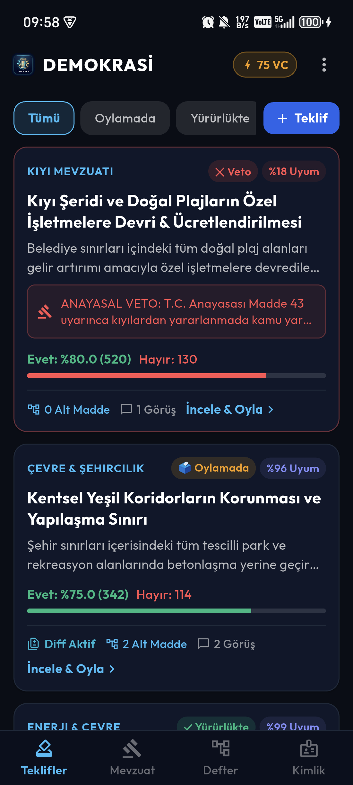
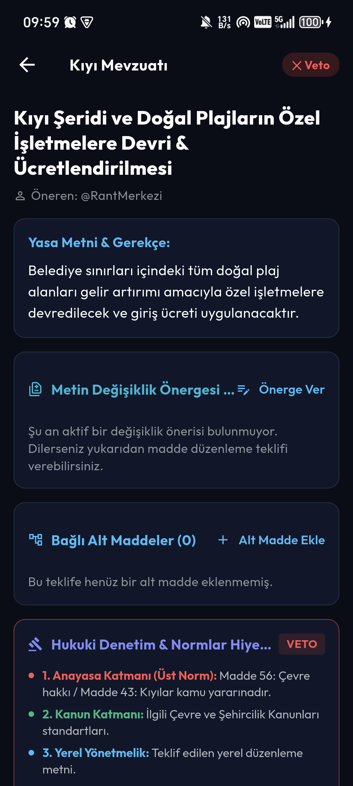
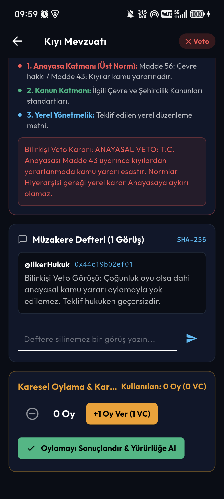
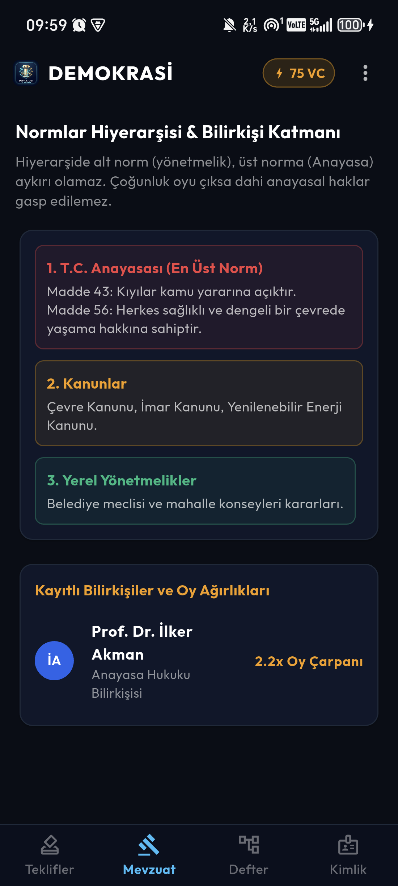
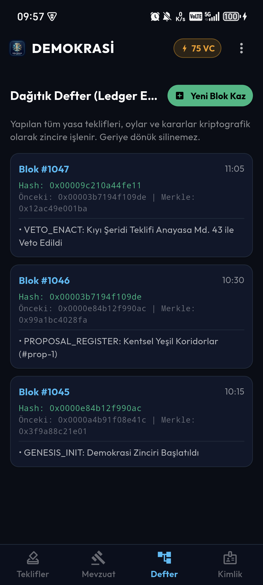
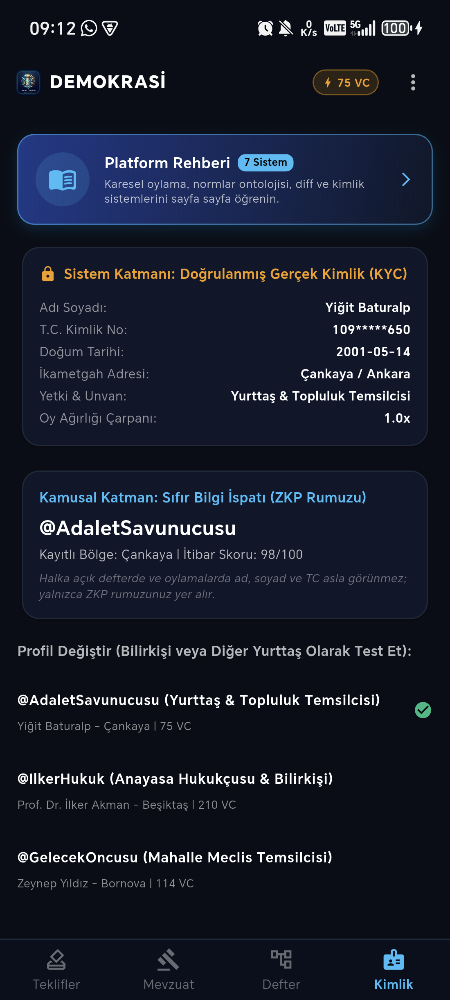
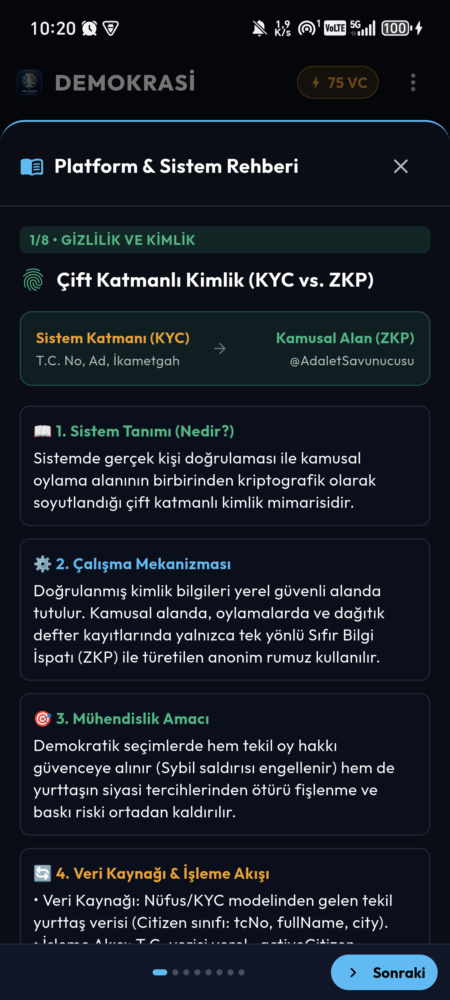
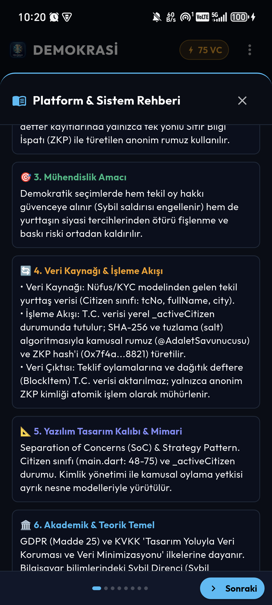
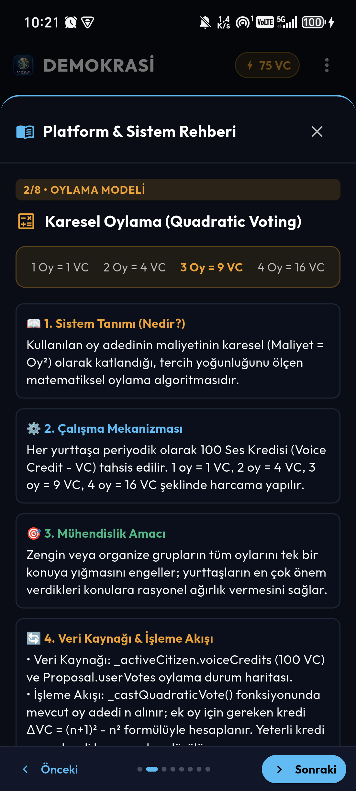
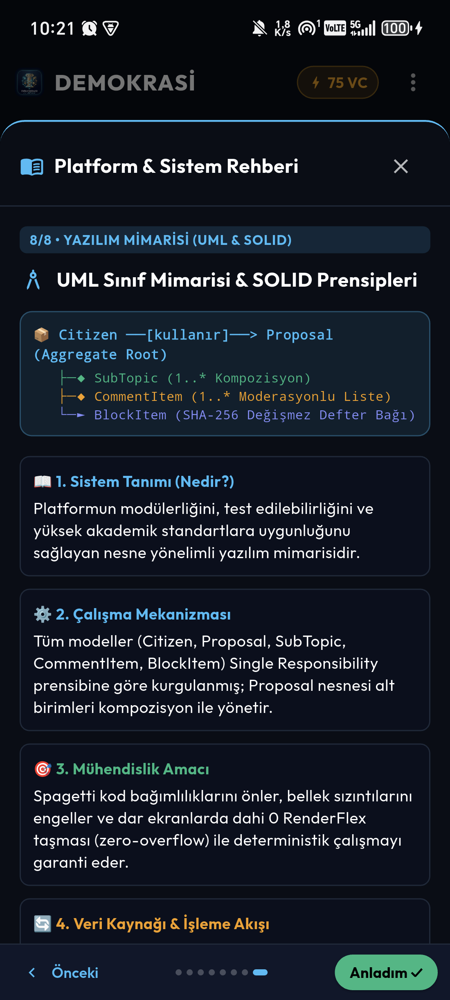

Geleneksel temsilî demokrasi modelleri; torba yasalarla halkın iradesinin perdelenmesi, çoğunluk oyuyla temel anayasal hakların çiğnenmesi (çoğunluğun tiranlığı), sermaye sahiplerinin oy manipülasyonu ve vatandaşların siyasi fişlenme endişesiyle hür iradelerini ortaya koyamaması gibi köklü krizlerle karşı karşıyadır.
Bu proje; modern bilgisayar bilimleri, kriptografik özetleme (SHA-256 / Merkle Trees), Karesel Oylama (Quadratic Voting) ve Kelsen Normlar Hiyerarşisini bir araya getirerek doğrudan halk denetiminde çalışan yerel ve ulusal bir dijital yönetişim altyapısı sunar.
Uygulamayı ilk defa açan bir vatandaş veya jüri üyesi, özellikle Dağıtık Defter ekranındaki karmaşık hash kodlarını ve karesel kredi hesaplarını anlamakta zorlanabilir. Aşağıdaki tablo ve teknik izahat, her değerin arkasındaki bilimsel temeli ortaya koyar:
| Ekranda Görünen Değer | Teknik Anlamı | Vatandaş & Hoca İçin Tercümesi | Sistemdeki Görevi |
|---|---|---|---|
Blok #1047 |
Blok Yüksekliği (Block Height) | Değişmez defterin 1047. sayfasıdır. | Oyların geriye dönük silinmesini engeller; sıralı zincir bütünlüğü sağlar. |
Hash: 0x00009c210a44... |
SHA-256 Kriptografik Özeti | O bloğun matematiksel dijital mührüdür. | İçerikten tek bir harf dahi değiştirilse hash bozulur ve tahrifat kanıtlanır. |
Önceki: 0x00003b71... |
Previous Block Hash | Önceki bloğa bağlanan kopmaz çelik zincirdir. | Geçmişteki kararları değiştirmeyi matematiksel olarak imkansız kılar. |
Merkle: 0x12ac49e001ba |
Merkle Ağacı Kökü (Root) | Sayfadaki yüzlerce oyun tek satırlık DNA özetidir. | Mobil cihazlarda gigabaytlarca veri indirmeden anlık oy ispatı (SPV) sağlar. |
75 VC |
Voice Credit (Ses Kredisi) | Yurttaşın demokratik oy bütçesidir. | Paranın değil, her yurttaşın eşit kredilendirilmesini sağlar. |
+1 Oy Ver (9 VC) |
Karesel Maliyet Formülü (Oy²) | 3. oy için 9 kredi talep edilir. | Radikal grupların veya zenginlerin tek konuya tüm gücünü yığmasını önler. |
%96 Uyum / %18 Uyum |
Normlar Hiyerarşisi Skoru | Teklifin Anayasaya uygunluk puanıdır. | %50 altı teklifler çoğunluk oyu çıksa dahi otomatik VETO edilir. |
2.2x Oy Çarpanı |
Bilirkişi Uzmanlık Katsayısı | Hukukçunun anayasal konulardaki oy ağırlığıdır. | Popülizme karşı liyakat temelli teknik ağırlık sağlar. |
0x0000 Sıfırları Ne Anlama Gelir?+ Yeni Blok Kaz butonuna tıklandığında yeni bir blok madencilikle kütüğe eklenir.
Uygulama telefon üzerinde gerçek ortamda test edilmiş ve tüm ekranlar sıfır taşma (zero-overflow) ile doğrulanmıştır:

Yasa teklifleri, onay oranları, veto etiketleri ve üstte harcanabilir 75 VC bütçesi.

Fıkra bazlı kırmızı/yeşil diff değişiklik önergeleri ve alt norm denetimi.

Maliyet = Oy² hesaplayıcısı ve her yoruma özel SHA-256 işlem özetleri.

Hans Kelsen piramidi: Anayasa > Kanun > Yönetmelik ve 2.2x Bilirkişi ağırlığı.

Blok indeksi, SHA-256 hash mührü, Previous Hash, Merkle Root ve Yeni Blok Kaz butonu.

Doğrulanmış KYC (Ad/TC) devlette kalır; oylamalarda sadece @AdaletSavunucusu ZKP rumuzu görünür.

Nüfus/KYC Citizen verisinin tuzlama (salt) ve SHA-256 ile ZKP pseudonym (@AdaletSavunucusu) üretimi ve defter izolasyonu.

SoC ve Strategy Pattern entegrasyonu, Sybil direnci ve KVKK Veri Minimizasyonu kurallarının yazılımsal uygulanışı.

Vitalik Buterin & Weyl karesel maliyet motoru ($Cost = n^2$), Voice Credit düşümü ve blok defterine oylama işlemi mühürlenmesi.

Proposal Aggregate Root, SubTopic, CommentItem, BlockItem kompozisyonu ve sıfır taşmalı (zero-overflow) responsive mimari.
Sistemin mimarisini, veri akışını ve demokratik modellerini test etmek için aşağıdaki değerlendirme adımları uygulanabilir:
Uygulama içine entegre edilen 8 sayfalık Platform & Mimari Rehberi açılarak sistemin temel prensipleri, veri kaynakları, algoritmik işleme modelleri, GoF yazılım kalıpları (Separation of Concerns, Command, Chain of Responsibility, Composite, Memento, Singly-Linked List, SOLID) ve akademik referansları slayt slayt incelenebilir.
Sistemde tekil yurttaş haklarını güvenceye almak ve Sybil (sahte bot) saldırılarını engellemek için yerel düzeyde T.C. Kimlik doğrulaması (KYC) yapılır. Kamusal alanda ve açık defterde ise kimlik verisi asla ifşa edilmez; Sıfır Bilgi İspatı (ZKP) ile üretilen anonim rumuz kullanılır. Böylece yurttaşın oy mahremiyeti ve GDPR/KVKK veri minimizasyonu tam güvenceye alınır.
Klasik parlamentolardaki toptancı kabul/ret mekanizması yerine 'Metin Değişiklik Önergesi (Diff)' modeli uygulanır. Yurttaş yasa metninin belirli bir fıkrasına kırmızı/yeşil diff sunabilir ve topluluk kabul ettiğinde bu yama ana yasa metnine atomik olarak işlenir. Alt maddeler (Composite Pattern) yapısıyla torba yasa istismarı engellenir.
Vitalik Buterin ve Glen Weyl tarafından formüle edilen Karesel Oylama modeli işletilir. Her yurttaşın 100 Voice Crediti vardır; maliyet karesel olarak artar ($1\text{ oy} = 1\text{ VC}, 2\text{ oy} = 4\text{ VC}, 3\text{ oy} = 9\text{ VC}$). Bu matematiksel kural, sermaye gruplarının oy satın almasını engeller ve seçmenlerin sadece hayatlarını doğrudan etkileyen konulara ağırlık vermesini sağlar.
Hans Kelsen Normlar Hiyerarşisi mimarisi uyarınca çoğunluğun tiranlığı engellenir. Kıyı Şeridi Teklifinde halkın %80'i 'plajlar özelleşsin' dese dahi, sistemdeki AI Hukuk Denetçisi ve Anayasa Bilirkişisi devreye girerek T.C. Anayasası Madde 43 (Kıyılar kamunundur) uyarınca teklifi derhal VETO eder.
Platformdaki her teklif, oy ve veto kararı SHA-256 blok zincirine mühürlenir. '+ Yeni Blok Kaz' butonuyla mempool'daki bekleyen işlemler Proof-of-Work simülasyonuyla yeni bloğa eklenir. Kriptografik özet zinciri sayesinde geçmiş işlemler geriye dönük olarak silinemez veya tahrif edilemez.
Projenin nesneye dayalı yazılım mühendisliği tasarımı, bileşenler arası ilişkiler, kardinaliteler (1-to-many composition), veri tipleri ve metod imzaları aşağıdaki UML Sınıf Diyagramında modellenmiştir:
Bir yurttaşın oy verme anından itibaren çalışan kredi hesabı, anayasal denetim ve blok defteri çağrı sırası:
Proposal nesnesi, torba yasa suistimalini önlemek adına SubTopic (Alt Maddeler) ve CommentItem nesnelerini tek tip bir hiyerarşide yönetir.BlockItem nesneleri prevHash göstergesiyle geriye dönük değiştirilemez tek yönlü bağlı liste (singly-linked list) oluşturur.Kullanıcının talimatı doğrultusunda Balpy projesindeki Outfit font ailesi projeye entegre edilmiş; renk paletine (Gece Siyahı, Zümrüt Yeşili, Elektrik Mavisi, Kehribar) kesinlikle dokunulmamıştır:
Tüm ekranlar flutter analyze ile 0 hata/uyarı ve dar ekranlarda (320px) flutter test ile 0 RenderFlex overflow başarısıyla mühürlenmiştir.